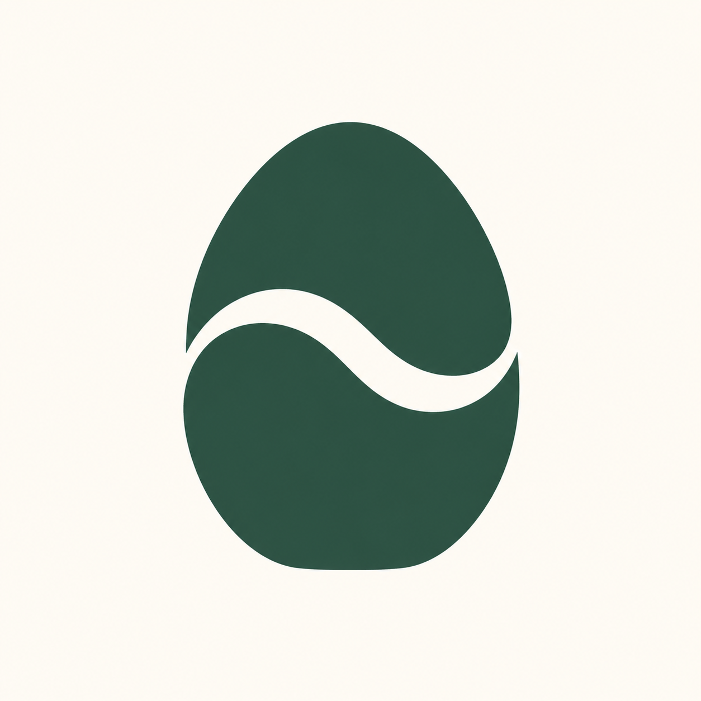
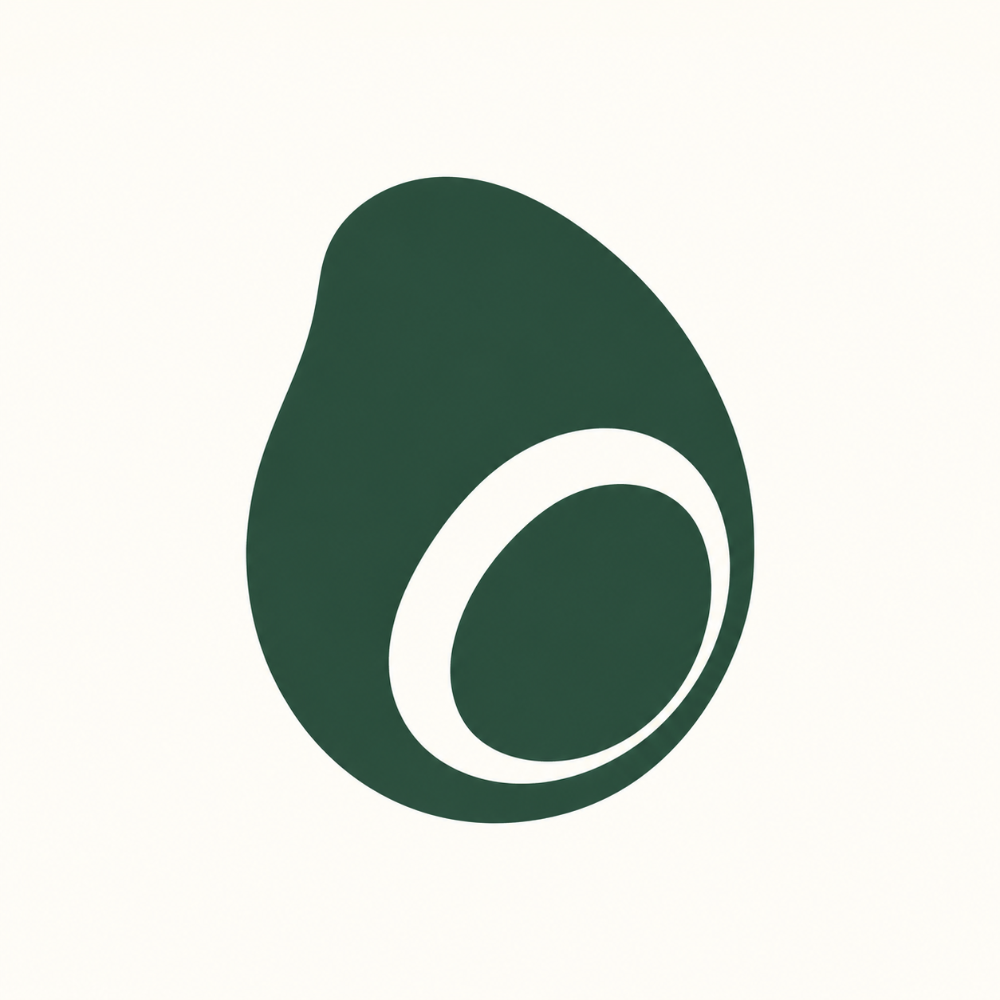

<!doctype html><html lang="zh-CN"><meta charset="utf-8"><meta name="viewport" content="width=device-width,initial-scale=1"><title>流转线Logo20款对比</title><style>*{box-sizing:border-box}body{margin:0;background:#f8f5ed;color:#29473e;font:15px/1.8 'Microsoft YaHei',sans-serif}main{max-width:1400px;margin:30px auto;padding:20px}h1{font-size:27px}section{display:grid;grid-template-columns:repeat(4,minmax(0,1fr));gap:18px}article{border:1px solid #d3dccf;padding:12px;border-radius:10px}img{width:100%;display:block}label{display:block;font-weight:600}a{color:#48695e;font-size:12px}.selection{position:sticky;top:0;background:#f8f5edf5;border-bottom:1px solid #bccbbd;padding:12px;z-index:2;margin-bottom:20px}input{accent-color:#29473e}@media(max-width:850px){section{grid-template-columns:repeat(2,minmax(0,1fr))}}</style><main><h1>20款流转线Logo形态探索</h1><p>先比较轮廓、留白和共修关系，再选择候选精修。点击勾选后可按编号反馈。</p><div class="selection" id="selection">已选：暂无</div><section><article><label><input type="checkbox" value="01"> 01 · 饱满种核</label><a href="Logo流转线探索-01-饱满种核-20261030.png" target="_blank">查看原图</a></article><article><label><input type="checkbox" value="02"> 02 · 修长种核</label><a href="Logo流转线探索-02-修长种核-20261030.png" target="_blank">查看原图</a></article><article><label><input type="checkbox" value="03"> 03 · 横向杏核</label><a href="Logo流转线探索-03-横向杏核-20261030.png" target="_blank">查看原图</a></article><article><label><input type="checkbox" value="04"> 04 · 静石</label><a href="Logo流转线探索-04-静石-20261030.png" target="_blank">查看原图</a></article><article><label><input type="checkbox" value="05"> 05 · 卵圆</label><a href="Logo流转线探索-05-卵圆-20261030.png" target="_blank">查看原图</a></article><article><label><input type="checkbox" value="06"> 06 · 微开</label><a href="Logo流转线探索-06-微开-20261030.png" target="_blank">查看原图</a></article><article><label><input type="checkbox" value="07"> 07 · 同心种</label><a href="Logo流转线探索-07-同心种-20261030.png" target="_blank">查看原图</a></article><article><label><input type="checkbox" value="08"> 08 · 折叠种</label><a href="Logo流转线探索-08-折叠种-20261030.png" target="_blank">查看原图</a></article><article><label><input type="checkbox" value="09"> 09 · 双籽相伴</label><a href="Logo流转线探索-09-双籽相伴-20261030.png" target="_blank">查看原图</a></article><article><label><input type="checkbox" value="10"> 10 · 共根</label><a href="Logo流转线探索-10-共根-20261030.png" target="_blank">查看原图</a></article><article><label><input type="checkbox" value="11"> 11 · 三籽共修</label><a href="Logo流转线探索-11-三籽共修-20261030.png" target="_blank">查看原图</a></article><article><label><input type="checkbox" value="12"> 12 · 包容</label><a href="Logo流转线探索-12-包容-20261030.png" target="_blank">查看原图</a></article><article><label><input type="checkbox" value="13"> 13 · 玉圆</label><a href="Logo流转线探索-13-玉圆-20261030.png" target="_blank">查看原图</a></article><article><label><input type="checkbox" value="14"> 14 · 柔方</label><a href="Logo流转线探索-14-柔方-20261030.png" target="_blank">查看原图</a></article><article><label><input type="checkbox" value="15"> 15 · 柔菱</label><a href="Logo流转线探索-15-柔菱-20261030.png" target="_blank">查看原图</a></article><article><label><input type="checkbox" value="16"> 16 · 拱籽</label><a href="Logo流转线探索-16-拱籽-20261030.png" target="_blank">查看原图</a></article><article><label><input type="checkbox" value="17"> 17 · 半合</label><a href="Logo流转线探索-17-半合-20261030.png" target="_blank">查看原图</a></article><article><label><input type="checkbox" value="18"> 18 · 回环</label><a href="Logo流转线探索-18-回环-20261030.png" target="_blank">查看原图</a></article><article><label><input type="checkbox" value="19"> 19 · 内芽</label><a href="Logo流转线探索-19-内芽-20261030.png" target="_blank">查看原图</a></article><article><label><input type="checkbox" value="20"> 20 · 留白种</label><a href="Logo流转线探索-20-留白种-20261030.png" target="_blank">查看原图</a></article></section><p>内置imagegen独立生成的概念稿。完整提示词：<a href="Logo流转线20款提示词与记录-20261030.json">查看记录</a></p></main><script>const boxes=[...document.querySelectorAll('input')];let saved=[];try{saved=JSON.parse(localStorage.getItem('logo20-flow-selection')||'[]')}catch{}boxes.forEach(b=>b.checked=saved.includes(b.value));function update(){const values=boxes.filter(b=>b.checked).map(b=>b.value);document.getElementById('selection').textContent='已选：'+(values.join('、')||'暂无');try{localStorage.setItem('logo20-flow-selection',JSON.stringify(values))}catch{}}boxes.forEach(b=>b.onchange=update);update();</script></html>